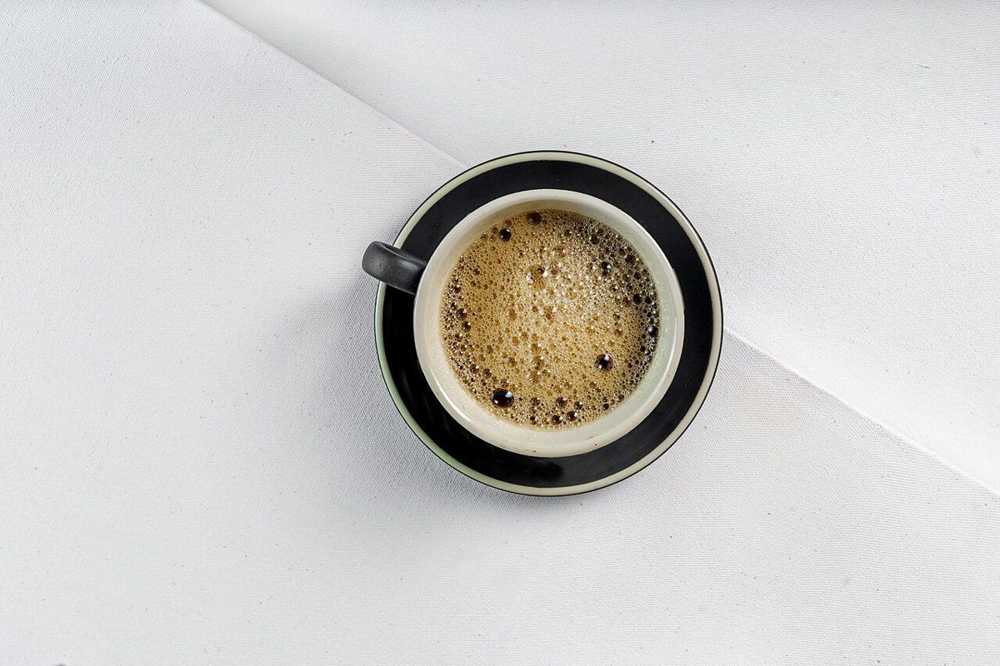

コーヒースタンド / 徳島県阿南市大潟町
Lingonberrycoffeestand
徳島県阿南市大潟町にあるコーヒースタンド「Lingonberry coffeestand」のご案内ページです。営業時間やメニューなど、詳しいことは準備中。まずはInstagramをのぞいてみてください。

制作側の連想
「stand」から、立って使う机の高さボタンを思い出した。
このサイトのテーマは「立ち机の高さ記憶ボタン」です。立ったまま使う机に、好みの高さを覚えさせるボタンを並べたイメージで、5つのページを高さ1〜5の5段に見立てました。「stand(立つ)」という言葉から制作側が連想したもので、制作側の連想であり、お店の理念・由来とは無関係です。店名の由来やお店の考えは分かりません。
1ホーム
2メニュー
3口コミ
4お店のこと
5アクセス
ページを移るたびに、棒が1段ずつ高くなります。ただそれだけの遊びです。
ものの手触り
質感のクローズアップ(イメージ)
お店の写真ではありません。国外・撮影地不明のフリー素材から、パン・菓子・豆・布を選んだイメージです。


ご案内
お店のこと(確認できたものだけ)
| 所在地 | 〒774-0022 徳島県阿南市大潟町143-24 |
|---|---|
| 電話 | なし |
| 営業時間 | 準備中 |
| 定休日 | 準備中 |
| メニュー・価格 | 準備中 |
| ご予約 | 準備中 |
| 駐車場 | 準備中 |
| @lingonberrycoffeestand |